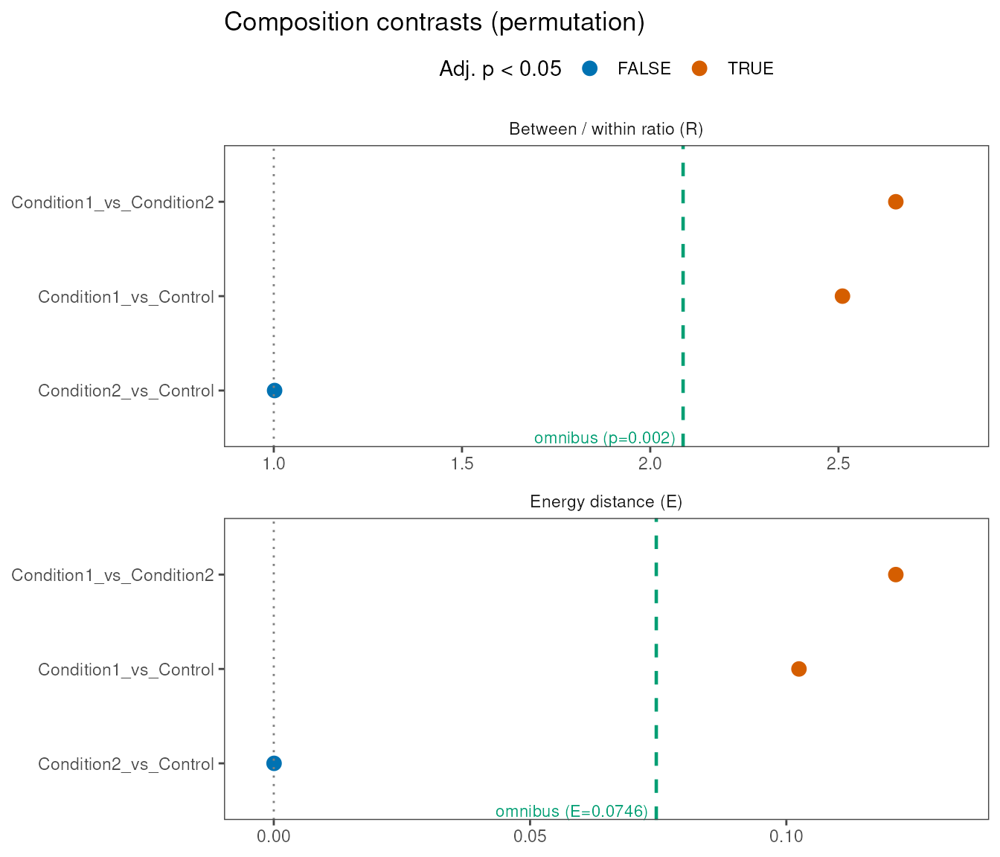
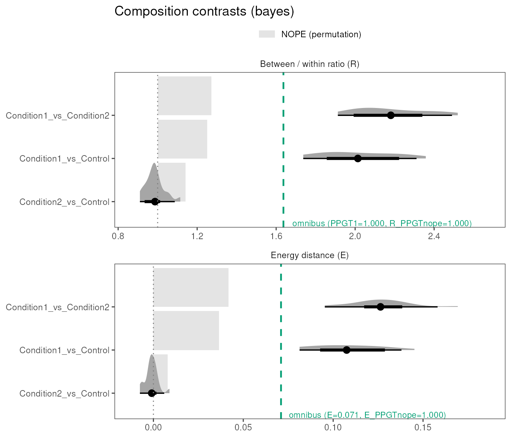

Hellinger enrichment for subject-level compositions
GW McElfresh
Methods: Paul Edlefsen
2026-10-20
Source:vignettes/hellinger-enrichment.Rmd
hellinger-enrichment.RmdUnderstanding whether categorical compositions differ between
experimental groups is critical when you summarize single-cell
annotations to subject-level frequencies. The unit of inference is the
donor (or animal, or replicate), whose multinomial counts define a
composition vector on a probability simplex. Cell-level cluster
proportions can look sharply different while subject-level compositions
remain exchangeable across groups, and the reverse can hold when
sampling noise is large relative to an imposed enrichment. Real cohorts
rarely reduce to a single pairwise comparison, so this vignette uses
three groups: a Control, a Condition1 group with an imposed enrichment,
and a Condition2 group that remains exchangeable with Control. Here, we
illustrate HellingerDistanceEnrichment on that synthetic
cohort, separating the conceptual framework (distance, ratio, contrasts,
inference) from the worked analysis that recovers which comparisons
differ.
Concepts
Paul Edlefsen developed the inferential core below: Hellinger geometry on Jeffreys-softened subject compositions, the between/within distance ratio , observed-inclusive label permutation, and collapse/subset contrasts. The Dirichlet Bayes option instead draws subject compositions from a conjugate posterior, so composition uncertainty carries into every statistic the package reports.
Composition enrichment
Composition enrichment asks whether experimental groups occupy different regions of the simplex once you aggregate cells to subjects. At the cell scale, each row carries a category label (cluster, cell type, module score bin) and metadata that links that cell to a subject and a group. At the subject scale, those labels become counts: for subject and category , we observe cells (or events) in category , and the subject’s composition is the normalized frequency vector .
The scientific question is relational. We ask whether between-group compositional distance exceeds within-group compositional distance across subjects, and leave aside which category dominates any one subject. That framing mirrors pseudobulking in expression analysis: many cells collapse to one replicate-level observation, and hypothesis tests must respect the replicate as the unit of inference. A cluster enriched at the cell level within a single subject does not, by itself, establish group-level enrichment, because one subject’s multinomial draw can dominate the apparent pattern.
This package tests enrichment by comparing the average pairwise
Hellinger distance between subjects in different groups to the average
pairwise distance between subjects in the same group. The output is an
effect-size ratio plus a p-value from label permutation on fixed
compositions, or, under the Bayesian option, the posterior probability
that the ratio exceeds 1 (PPGT1) from Dirichlet composition
draws. Either way, the package breaks the result down into an omnibus
summary and contrast-specific results.
Hellinger distance
Once you normalize counts to frequencies, compositions live on a simplex, and Euclidean distance on raw proportions is a poor geometry: scaling one category compresses the others, and small zeros carry disproportionate weight. Hellinger distance measures separation between two frequency vectors and by comparing their square roots:
Values near 0 indicate similar compositions; values near 1 indicate near-disjoint support. The package computes from count vectors by forming frequencies internally, so it measures distance on normalized compositions, never on raw counts.
Sparse categories create a second problem: empirical frequencies of zero are not credible endpoints when counts are small. Before computing distances, the package softens counts with a Jeffreys-style pseudocount. For subject , category , and default ,
The default priorPseudocounts = 1/2 matches the
conjugate Dirichlet prior used in the Bayesian approach. Softening pulls
extreme proportions toward the simplex center and stabilizes pairwise
distances when some categories are rarely observed.
Hellinger distance answers whether compositions are separable in frequency space. It does not, by itself, identify which category drives a contrast, establish causality, or correct for differences in total cell yield between subjects beyond what the normalized frequencies encode. Biological interpretation still requires knowing what the categories represent and whether the aggregation level matches the experimental question.
The enrichment ratio
Given a subjects-by-categories count matrix, the package builds a symmetric subject-level Hellinger distance matrix , where using softened, normalized compositions. It then groups subjects by experimental label and, for each group pair , summarizes distances as mean pairwise Hellinger distance within or between subject sets:
- Within-group (diagonal of the group summary): mean of for subjects both in group .
- Between-group (off-diagonal): mean of for subjects in group , in group .
The enrichment effect size is the ratio of average between-group distance to average within-group distance:
When , subjects in different groups are farther apart, on average, than subjects within the same group under this metric. When , group labels are consistent with exchangeable compositions relative to the observed within-group dispersion. The ratio rests on pairwise subject distances, so each group must contribute at least two subjects; otherwise within-group means are not identifiable and inference stops with an error.
This ratio is the test statistic for both permutation and Bayes methods. It compresses a full distance matrix into a single scale-free quantity that you can compare across contrasts and posterior draws.
Contrasts
A contrast is a specified comparison among group labels on which the
package evaluates
.
The package always computes an omnibus contrast that
includes all group levels present in the composition object. Without
contrasts, it also computes all pairwise
contrasts
(
comparisons). If you pass contrasts, those specifications
become the contrast family: the package skips auto pairwises, so you pay
the permutation Holm adjustment only on the comparisons you named. Set
includePairwise = TRUE if you still want the full pairwise
set in addition to your specs.
The analogy to differential expression is deliberate but not exact.
In DE, a contrast selects linear combinations of model coefficients on
log-expression. Here, a contrast selects which subjects enter the
between/within distance summaries: all groups (omnibus), a pair of
groups (subset), or a remapped grouping (collapse). A length-2 character
vector is one pairwise comparison. A list may mix those vectors with
collapse or subset lists; names become contrastId values,
and unnamed elements get A_vs_B identifiers.
Two levels of reporting matter in practice:
-
Permutation:
result$omnibus$pValueis the unadjusted p-value for the global between/within ratio;result$contrasts$pValueandpAdjare contrast-specific, withpAdjapplying Holm adjustment across the contrast table by default (pAdjustMethod = "holm"). -
Bayes:
result$omnibus$PPGT1andresult$contrasts$PPGT1are the posterior probability that ;R_PPGTnopeandE_PPGTnopeare the posterior probabilities that and clear their NOPE edges (R_nopeHigh,E_nopeHigh);R_hdiAboveNopeandE_hdiAboveNopeareTRUEwhen the 95% HPDI sits entirely above that reported edge. There is nopAdj;pAdjustMethodis unused.
Omnibus and pairwise contrasts answer nested questions. A significant omnibus result indicates that at least some group separation exists under the ratio metric; pairwise contrasts localize that separation, with multiplicity control on the contrast table rather than on the omnibus line.
Permutation and Bayes answer different questions
Both methods use the same between/within ratio ; they differ in whether they hold composition vectors fixed.
Permutation (method = "permutation").
The package estimates compositions once from softened counts, which
fixes the subject distance matrix. It then permutes group labels among
subjects
times (nPermutations) and recomputes
on each shuffle. The one-sided p-value includes the observed statistic
in the numerator:
This tests whether group labels are exchangeable given the estimated compositions. It does not propagate uncertainty in the multinomial allocation of cells to categories.
Bayes (method = "bayes"). For each
posterior draw, the package samples subject compositions from a
conjugate Dirichlet posterior. With Jeffreys increment
,
where
is the count vector for subject
.
The package rebuilds the full Hellinger distance matrix from that draw
and recomputes
and
.
Across nPosterior draws, it reports:
- posterior-mean
(
effectSize), - posterior probability that
(
PPGT1), - posterior probabilities that
and
clear their NOPE intervals, permutation-calibrated null reference
intervals set by label shuffling (
R_PPGTnope,E_PPGTnope), with the median upper bound of each interval (R_nopeHigh,E_nopeHigh) and whether the 95% HPDI sits entirely above that edge (R_hdiAboveNope,E_hdiAboveNope), described below, - 95% highest posterior density interval on
(
effectCiLow,effectCiHigh), the shortest window containing 95% of the draws.
PPGT1 is
.
is the exchangeability reference for the metric (between-group distances
match within-group distances on average), not a threshold for a
practically large enrichment. You read closeness to 1 from the interval
and from the posterior draws, including
result$omnibus$draws and the omnibus rows of
result$draws. Equal-tailed central posterior intervals
remain available via credibleInterval = "cpi". HPDI is the
better default when the posterior of
is asymmetric near 1, because a quantile interval spends equal mass in
both tails even if one tail is a long, empty stretch.
By sampling compositions instead of fixing them, the Bayesian
approach propagates multinomial uncertainty into
.
When counts are sparse, that can widen credible intervals or lower
PPGT1 relative to a permutation p-value on the point
estimate, even when point ratios look similar. When counts are dense,
Dirichlet draws concentrate around the same frequencies used by
permutation, so a ratio that sits only slightly above 1 can still have
PPGT1 near 1: composition-sampling noise is small relative
to a 1-2% bump in
,
while label permutation still finds that bump easy to produce by chance.
The two methods then disagree without either being misspecified, because
they answer formally different questions. With dense counts and a strong
imposed enrichment, as in the synthetic example below, they often agree
on which contrasts rise above 1.
NOPE: a permutation-calibrated null reference for the Bayes output
Dense counts are the usual case for single-cell data, where each
subject contributes hundreds or thousands of cells, and that is where
PPGT1 misleads. The Dirichlet posterior only describes
count noise within each subject, so it treats the sampled subjects as
the whole population. If groups do not differ, the sample
still lands a little above or below 1, and as depth grows the posterior
shrinks onto that chance value. In the sampling-depth vignette’s
simulation (10 categories, 8 versus 8 subjects drawn from identical
populations, 100 cohorts per depth), 27% of cohorts reported
PPGT1 > 0.95 at 2000 cells per subject and 25% at 500,
against 1% at 50 cells per subject. A threshold of exactly 1 therefore
means something different at different depths.
The defaults nope = "shuffle" and
energyNope = "shuffle" set a Null-Oriented Permutation
Equivalence (NOPE) interval on each statistic: a permutation-calibrated
null reference interval for conditional effects. The interval is
conditional in two senses: on the observed design (group sizes, depths,
within-group spread) and on each posterior draw’s compositions. The goal
parallels a permutation test, but NOPE reports a region instead of a
p-value. Within each posterior draw, the package shuffles group labels
nNopeShuffles times (default 200) on that draw’s distance
matrix and takes the 95th percentile of the shuffled
and of the shuffled
as the upper edges of their NOPEs. Shuffling keeps the group sizes,
depths, number of categories, and within-group spread, so each edge is
the largest value these subjects routinely produce when labels carry no
information; in that simulation the
edge sat near 1.06 at every depth, and R_PPGTnope > 0.95
fired in at most 1% of the null cohorts.
R_PPGTnope is the posterior probability that
clears its edge, and E_PPGTnope the same for
;
R_nopeHigh and E_nopeHigh are the median edges
across draws. We floor each draw’s edge at the no-difference value (1
for
,
0 for
),
so R_PPGTnope can never exceed PPGT1. The 95%
HPDI (effectCiLow to effectCiHigh) is the
credible interval on the statistic; the NOPE is the permutation null
region. R_hdiAboveNope is TRUE when that HPDI
sits entirely above the reported NOPE
(effectCiLow > R_nopeHigh); E_hdiAboveNope
is the same comparison for
.
We recommend reading the NOPE probabilities as the headline Bayes result
and keeping PPGT1 as the exchangeability reference. Take
heed of the threshold, though: a cutoff of 0.95 asks nearly every draw
to clear its own shuffle edge, so it runs well below a 5% false-positive
rate and loses power, most of all at shallow depth
(R_PPGTnope > 0.95 detected 1% of 5-point shifts at 50
cells per subject, against 50% for the permutation test). In the same
simulation R_PPGTnope > 0.5 tracked the permutation test
at 500 and 2000 cells, and the sampling-depth vignette reports the same
comparison for E_PPGTnope and for
R_hdiAboveNope. Setting nope or
energyNope to "none" drops that statistic’s
columns. A fixed seed gives different posterior draws with and without a
NOPE, because its shuffles consume random numbers between Dirichlet
draws; fixed edges consume none.
Very small groups cannot support a NOPE, for the same reason they
cannot produce a small permutation p-value. With 3 versus 3 subjects
there are only 10 distinct ways to split them, so the true split alone
is 10% of all shuffles and neither statistic can clear its 95th
percentile. If the true split is at least 5% of shuffles, the package
warns, reports both NOPE probabilities as NA instead of a
misleading 0, and sets enoughShufflesForNope to
FALSE so the reason stays attached to the result; 4 versus
4 is the smallest balanced design that supports it.
NOPE and Kruschke’s ROPE
NOPE borrows the equivalence logic of Kruschke’s region of practical equivalence, or ROPE (Kruschke, 2018, Advances in Methods and Practices in Psychological Science 1:270-280) and departs from his procedure in two ways. In Kruschke’s ROPE, the analyst fixes the region before seeing the data, from domain knowledge of which effects are negligible, and the decision compares the 95% highest density interval with that region. That works when the parameter has familiar units, such as a difference in means. Few of us have that intuition for a ratio of mean Hellinger distances or for an energy distance, so the NOPE takes its edge from the data: the largest value of the statistic these subjects routinely produce when group labels carry no information. The edge also differs from draw to draw, and each NOPE probability counts the draws that clear their own edge. The NOPE therefore behaves as a null threshold set from label shuffles, closer to a permutation test than to a statement of practical significance.
If you know the smallest effect that matters, pass it as a fixed NOPE
bound, which plays the role of Kruschke’s preset region: a number above
1 for nope on
,
or a number above 0 for energyNope on
.
For
,
ComputeEnergyNopeBound() turns a composition shift into a
bound: give it the reference and shifted compositions, and it returns
with Bhattacharyya coefficient
.
The bound is exact when every subject sits at its group’s mean and
approximate otherwise. Fixed edges need no shuffles and work for groups
too small for the NOPE; when neither statistic keeps a NOPE, the run
draws no extra random numbers. The worked example below shows the
default NOPEs and fixed edges side by side.
Energy distance alongside the ratio
Both methods also report the energy distance between groups. We build it from the same subject distance matrix as , but square each Hellinger distance first:
We average
over group pairs for the omnibus (energyDistance; Bayes
adds energyCiLow and energyCiHigh). Squaring
makes
the squared distance between the two group centroids in square-root
composition space, less the sampling spread each centroid carries.
measures how far apart the groups are relative to how spread out they
are, while
measures the shift in mean composition itself, with no division. If
every subject sits at its group centroid,
between the centroids, which is why the fixed energyNope
above can start from a composition shift. The sample estimate leaves out
each subject’s distance to itself, so it can dip slightly below 0 when
groups do not differ.
For a single two-group contrast with similar spread and depth in both groups, the two statistics usually lead to the same call. They part ways in a few common situations:
- Unequal heterogeneity. If one condition (e.g. disease) is more variable than control, its spread dilutes even when the shift is real; reports the shift directly.
- Ranking contrasts. When pairwise contrasts differ in within-group spread, ordering them by mixes effect with noise; orders them by the shift alone.
- Very homogeneous groups. When subjects within each group are nearly identical, a tiny shift can produce a large ; shows that the shift is small in absolute terms.
- Different depths or studies. Count noise at low depth adds to between- and within-group distances alike, which pulls toward 1. With squared distances that noise cancels from in expectation, although Jeffreys softening still shrinks both statistics at shallow depth. In the sampling-depth simulation, keeps about half its noise-free value at 25 to 50 cells per subject, while the excess of over 1 keeps about a third, so compares more fairly across cohorts, batches, and studies.
The trade runs the other way when groups differ in spread but not in
mean composition:
and its tests respond strongly, while
moves only slightly. The p-values and PPGT1 stay on
;
under Bayes, E_PPGTnope gives
its own NOPE, and
keeps its fold-change reading. The companion vignette, Sampling
depth, NOPE, and energy distance, runs a simulation study of each
situation above.
Execution
Build a synthetic long counts table
We begin with a known enrichment structure. A synthetic long table
carries one row per subject-category combination with columns
subjectId, category, group, and
n, matching the package’s default long-table schema. We
draw subjects from a multinomial allocation within each group, so
Control, Condition1, and Condition2 are approximately exchangeable
before we impose any enrichment. We then multiply counts in
Condition1 for Category0 by a fixed factor,
introducing a modest, known enrichment in that group alone. We leave
Condition2 unmodified, so its compositions remain exchangeable with
Control under the generating process.
The internal functions build_synthetic_long_table() and
plant_group_structure() live in the package namespace for
vignette and test use; they are not exported, but they provide a
reproducible procedure for simulating compositional cohorts.
library(HellingerDistanceEnrichment)
set.seed(26)
long_table <- HellingerDistanceEnrichment:::build_synthetic_long_table(
n_subjects_per_group = 6,
n_categories = 5,
groups = c("Control", "Condition1", "Condition2"),
seed = 26
)
long_table <- HellingerDistanceEnrichment:::plant_group_structure(
long_table,
target_group = "Condition1",
target_category = "Category0",
boost = 4
)
head(long_table)
#> subjectId category group n
#> 1 Control_S01 Category0 Control 12
#> 2 Control_S01 Category1 Control 20
#> 3 Control_S01 Category2 Control 27
#> 4 Control_S01 Category3 Control 23
#> 5 Control_S01 Category4 Control 18
#> 6 Control_S02 Category0 Control 18
table(unique(long_table[, c("subjectId", "group")])$group)
#>
#> Condition1 Condition2 Control
#> 6 6 6The head of the table confirms the long format: each subject
contributes
rows (one per category), and the imposed enrichment appears as larger
n in Condition1 for Category0
only. The subject-group table should show six subjects in each of the
three groups.
Extract compositions and run permutation inference
ExtractClusterComposition() aggregates the long table to
a CategoryComposition object, a subjects-by-categories
count matrix with a named group factor. It records provenance and
zero-fills missing subject-category combinations.
CompareGroupCompositions() accepts either a
CategoryComposition or a long table directly. Here we
extract first so you can inspect the subject-scale object before
inference.
composition <- ExtractClusterComposition(long_table)
composition
#> CategoryComposition with 18 subjects, 5 categories, and 3 groups
perm_result <- CompareGroupCompositions(
composition,
method = "permutation",
nPermutations = 500,
seed = 42
)
perm_result
#> HellingerEnrichmentResult (permutation): omnibus effectSize=2.0873, pValue=0.0020
#> omnibus energyDistance=0.0746 (squared Hellinger units)
#> 3 contrast(s) tested
perm_result$omnibus
#> $effectSize
#> [1] 2.087283
#>
#> $energyDistance
#> [1] 0.07462467
#>
#> $pValue
#> [1] 0.001996008
perm_result$contrasts
#> contrastId effectSize energyDistance pValue pAdj
#> 2 Condition1_vs_Condition2 2.652343 1.213565e-01 0.003992016 0.01197605
#> 3 Condition1_vs_Control 2.510626 1.024621e-01 0.003992016 0.01197605
#> 4 Condition2_vs_Control 1.002185 5.539422e-05 0.375249501 0.37524950The printed HellingerEnrichmentResult summarizes the
omnibus ratio and p-value. perm_result$omnibus holds the
global effect size and unadjusted p-value;
perm_result$contrasts holds all three pairwise contrasts
with Holm-adjusted pAdj columns, listed in the order the
package generates group-level pairs: Condition1_vs_Condition2,
Condition1_vs_Control, Condition2_vs_Control. The imposed enrichment
shows up at the omnibus level (effect size 2.09, p = 0.002) and in both
Condition1 contrasts, for example
Condition1_vs_Control (R = 2.51, pAdj = 0.012).
Condition2_vs_Control, the arm we never modified, sits at R
= 1.00 with pAdj = 0.38, consistent with exchangeability for a group
whose composition we never altered.
Custom contrasts (and optional collapse)
Default output includes every pairwise contrast. Passing
contrasts replaces that pairwise set with the comparisons
you named; the omnibus test still runs. Holm adjustment on permutation
pAdj then applies only to those rows. A length-2 character
vector is enough for one pair (c("Control", "Condition1")).
A named list helps when you want stable identifiers, or when a
comparison is a collapse instead of a subset. With three groups, a
natural planned family names the two primary comparisons: enriched
versus Control, and the unmodified group versus Control.
perm_custom <- CompareGroupCompositions(
composition,
method = "permutation",
nPermutations = 500,
contrasts = list(
condition1_vs_control = c("Control", "Condition1"),
condition2_vs_control = c("Control", "Condition2")
),
seed = 42
)
perm_custom$contrasts
#> contrastId effectSize energyDistance pValue pAdj
#> 2 condition1_vs_control 2.510626 1.024621e-01 0.003992016 0.007984032
#> 3 condition2_vs_control 1.002185 5.539422e-05 0.385229541 0.385229541perm_custom$contrasts contains those two rows instead of
all three pairwises, so the unused Condition1_vs_Condition2
comparison does not consume a Holm penalty. Set
includePairwise = TRUE if you need the old overlay (named
specs plus every pairwise). Collapse becomes essential when you relabel
experimental groups for analysis (for example, merging dose cohorts into
a single treated group) without rebuilding the count matrix by hand; see
?CompareGroupCompositions for the collapse
argument.
Bayesian approach
The Bayesian method reuses the same contrast specifications but
replaces fixed compositions with Dirichlet posterior draws. For vignette
execution time, keep nPosterior small; production analyses
should raise it so posterior means and intervals stabilize.
bayes_result <- CompareGroupCompositions(
composition,
method = "bayes",
nPosterior = 20,
seed = 42
)
bayes_result$omnibus
#> $effectSize
#> [1] 1.63687
#>
#> $PPGT1
#> [1] 1
#>
#> $R_PPGTnope
#> [1] 1
#>
#> $R_nopeHigh
#> [1] 1.132811
#>
#> $R_hdiAboveNope
#> [1] TRUE
#>
#> $E_PPGTnope
#> [1] 1
#>
#> $E_nopeHigh
#> [1] 0.02083857
#>
#> $E_hdiAboveNope
#> [1] TRUE
#>
#> $enoughShufflesForNope
#> [1] TRUE
#>
#> $effectCiLow
#> [1] 1.485177
#>
#> $effectCiHigh
#> [1] 1.768305
#>
#> $energyDistance
#> [1] 0.07099183
#>
#> $energyCiLow
#> [1] 0.05426503
#>
#> $energyCiHigh
#> [1] 0.08177732
#>
#> $draws
#> [1] 1.708383 1.512447 1.629517 1.653181 1.612448 1.739634 1.768305 1.746784
#> [9] 1.699903 1.667526 1.766796 1.554594 1.616840 1.567226 1.592179 1.485177
#> [17] 1.445179 1.719701 1.667845 1.583727
bayes_result$contrasts
#> contrastId effectSize PPGT1 R_PPGTnope R_nopeHigh
#> 2 Condition1_vs_Condition2 2.1807057 1.00 1.00 1.271343
#> 3 Condition1_vs_Control 2.0138347 1.00 1.00 1.250679
#> 4 Condition2_vs_Control 0.9866097 0.25 0.05 1.142103
#> R_hdiAboveNope E_PPGTnope E_nopeHigh E_hdiAboveNope enoughShufflesForNope
#> 2 TRUE 1.00 0.041741391 TRUE TRUE
#> 3 TRUE 1.00 0.036404736 TRUE TRUE
#> 4 FALSE 0.05 0.007847746 FALSE TRUE
#> effectCiLow effectCiHigh energyDistance energyCiLow energyCiHigh
#> 2 1.9125217 2.461328 0.1263427672 0.095355843 0.14684666
#> 3 1.7372538 2.263975 0.1075147607 0.081307826 0.13075750
#> 4 0.9101125 1.058920 -0.0009219148 -0.007514817 0.00312827bayes_result$omnibus$effectSize is the posterior mean of
over the Dirichlet draws; the permutation result reports
at the softened point estimate. The interval effectCiLow to
effectCiHigh is a 95% HPDI by default and shows whether
holds up under composition uncertainty. When the interval excludes 1,
PPGT1 is typically near 1; the interval width and
bayes_result$omnibus$draws show whether that exclusion is a
hair above 1 or a large enrichment. When the interval spans 1 but
permutation p-values are small, sparse counts may be driving a
fixed-composition signal that the Bayesian procedure weakens.
R_PPGTnope sharpens the first case: it asks whether
clears the edge that label shuffling routinely produces, so a posterior
that sits a hair above 1 no longer reads as enrichment.
To set the edges yourself, pass a number above 1 as nope
and a number above 0 as energyNope. Here
ComputeEnergyNopeBound() translates a 5-point composition
shift on five even categories into an
bound:
reference_composition <- rep(0.2, 5)
shifted_composition <- c(0.15, 0.25, 0.2, 0.2, 0.2)
energy_edge <- ComputeEnergyNopeBound(reference_composition, shifted_composition)
energy_edge
#> [1] 0.006376243
fixed_nope_result <- CompareGroupCompositions(
composition,
method = "bayes",
nPosterior = 20,
nope = 1.2,
energyNope = energy_edge,
seed = 42
)
fixed_nope_result$contrasts[, c("contrastId", "PPGT1", "R_PPGTnope", "R_nopeHigh", "E_PPGTnope", "E_nopeHigh")]
#> contrastId PPGT1 R_PPGTnope R_nopeHigh E_PPGTnope E_nopeHigh
#> 2 Condition1_vs_Condition2 1.0 1 1.2 1 0.006376243
#> 3 Condition1_vs_Control 1.0 1 1.2 1 0.006376243
#> 4 Condition2_vs_Control 0.3 0 1.2 0 0.006376243Every contrast now shares the edges
and
= 0.0064. PPGT1 differs slightly from
bayes_result despite the same seed, because only the NOPE
run consumed extra random numbers for its shuffles. Translating a
meaningful shift into a ratio needs a simulation at your own depths and
group sizes, because
also depends on within-group spread; the companion sampling-depth
vignette shows how that spread moves
.
Plot contrasts
PlotCompositionContrasts() stacks two panels that share
the contrast rows:
on top and
below, each read left to right on its own axis. A dotted vertical line
marks each statistic’s no-difference value,
and
.
When showOmnibus = TRUE (default), a dashed line in each
panel marks the omnibus value; the
panel labels it with the p-value (permutation) or PPGT1 and
R_PPGTnope (Bayes), and the
panel labels it with
and, under Bayes, E_PPGTnope. Set
showEnergyDistance = FALSE for the ratio panel alone.
PlotCompositionContrasts(perm_result)
Permutation contrasts on R (top) and E (bottom) with omnibus references.
For permutation results, the plot colors points by whether
Holm-adjusted pAdj < 0.05. For Bayes results, half-eye
plots show the posterior density of each contrast’s
and
with nested intervals, and a gray band behind each half-eye spans that
statistic’s NOPE, permutation-calibrated or fixed: from 1 to
R_nopeHigh in the top panel and from 0 to
E_nopeHigh in the bottom panel. The legend names each band:
“NOPE (permutation)” for the default, where the band shows the median of
the per-draw edges, or “NOPE (fixed)”, in a darker gray, for a bound you
supplied. The share of each slab right of its band approximates that
statistic’s NOPE probability; it matches exactly for a fixed edge, while
the NOPE compares each draw with its own edge.
PlotCompositionContrasts(bayes_result)
Bayesian half-eye posterior densities of R (top) and E (bottom), each with its NOPE band, for pairwise contrasts.
The two figures share the same scales, each with uncertainty suited to its method. Permutation marks discrete significance against the label null; Bayes shows composition uncertainty as half-eye densities of and . Reading the panels together separates the size of a shift () from how far it stands out against within-group spread ().
Closing interpretation
On this synthetic cohort, both approaches recover the imposed
Condition1 enrichment in Category0: the
omnibus ratio and both Condition1 contrasts sit well above
1, with permutation p-values and Bayesian intervals agreeing that the
shift is real. Condition2_vs_Control behaves as expected
for a group that we never modified, and the two methods agree on it:
permutation returns R = 1.00 with pAdj = 0.38, and the Bayesian interval
spans 1 (0.91 to 1.06) with PPGT1 = 0.25, R_PPGTnope = 0.05, and
E_PPGTnope = 0.05. A significant omnibus result therefore does not imply
that every pairwise group differs from Control. The energy distance
gives the same reading in absolute units:
Condition1_vs_Control separates by E = 0.1 squared
Hellinger units, while Condition2_vs_Control sits at E =
0.000055.
These results come from one synthetic cohort, and Bayes can sit on
either side of permutation. Sparse categories, unequal cell yields, or
violated exchangeability (for example, batch confounded with group) can
produce ratios that look enriched under fixed compositions but fail to
hold once we propagate Dirichlet uncertainty; there, Bayes can weaken a
permutation signal. Dense counts with
just above 1 produce the opposite disagreement: PPGT1 can
sit near 1 while the HPDI barely excludes 1, and permutation still
reports a large p-value because labels remain compatible with
exchangeability. R_PPGTnope targets this case: it stays low
when the excess over 1 is no larger than what label shuffling produces.
Permutation also targets a fixed
:
an exchangeable group will cross a p < 0.05 threshold by chance alone
roughly one run in twenty, so an isolated marginal p-value from a single
permutation run is weak evidence against exchangeability. The interval
and the draws are how you judge closeness to 1; PPGT1 alone
does not encode effect magnitude.
References
Kruschke, J. K. (2018). Rejecting or accepting parameter values in Bayesian estimation. Advances in Methods and Practices in Psychological Science, 1(2), 270-280. https://doi.org/10.1177/2515245918771304. Article page (APS); open-access record (IU ScholarWorks).